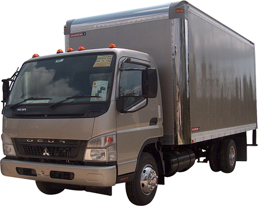

OpenGL Shaders
Art = Math + Code
Created by Alex Wayne
Lysertron
Badass Examples
Shaders are everywhere
Every surface you see in all modern realtime 3D rendering.
- What glows?
- What reflects light?
- How shiny are different bits?
CPU

Linear
Can do single things really fast, but limited to one thing at a time.
- Render pixel 1
- Then render pixel 2
- Then render pixel 3
- etc...
GPU
Parallel
Can do single things more slowly, but can do the same operation on many things at once.
- Render pixels 1-48
- Then render pixels 49-96
- Then render pixels 97-144
- etc...
CPU vs GPU
So... which is faster, when you have a gigantic pile of pixels to move?
- One 1080p video frame contains 2,073,600 pixels.
GLSL
OpenGL Shading Language
- Q: What color is this pixel? (for every pixel)
- A: The color output of your GLSL script
// Paint the town red!
void main() {
gl_FragColor = vec4(
1.0, // r: red
0.0, // g: green
0.0, // b: blue
1.0 // a: alpha/transparency
);
}
Math Helpers
mod
Returns remainder of division.
float brightness = mod(position.x, 0.25) * 4.0;
Math Helpers
abs
Always returns a positive number.
float brightness = abs(position.x - 0.5) * 2.0;
Math Helpers
smoothstep
Remap low and high point with a smooth curve.
float brightness = smoothstep(0.4, 0.6, position.x);
Vectors
A set of related numbers that describe different dimensions of a single value.
| 2D | 3D | 4D | |
|---|---|---|---|
| Position: | x, y | x, y, z | |
| Velocity: | x, y | x, y, z | |
| Rotation: | roll, pitch, yaw | ||
| Color: | r, g, b | r, g, b, a |
Vector Math
Add or substract vectors with each other.
// If I throw a ball from a moving car,
// whats the velcity of the ball?
vec3 ballVel = carVel + throwVel;
Which is identical to:
vec3 ballVel;
ballVel.x = carVel.x + throwVel.x;
ballVel.y = carVel.y + throwVel.y;
ballVel.z = carVel.z + throwVel.z;
Vector Math
Same with colors.
// yellow = red + green
vec3 color = vec3(1.0, 0.0, 0.0) + vec3(0.0, 1.0, 0.0);
// r g b r g b
Which is identical to:
vec3 color = vec3(1.0, 1.0, 0.0);
// r g b
Vector Math
Multiply or divide vector by numbers
// My car is traveling three times faster than your car!
vec3 myCarVel = yourCarVel * 3.0;
Which is identical to:
vec3 myCarVel;
myCarVel.x = yourCarVel.x * 3.0;
myCarVel.y = yourCarVel.y * 3.0;
myCarVel.z = yourCarVel.z * 3.0;
Vector Math
Multiply or divide vectors by other vectors
// Train B is going westward twice as fast as train A,
// but only half as fast northward.
vec2 trainVelB = trainVelA * vec2(2.0, 0.5);
Which is identical to:
vec2 trainVelB;
trainVelB.x = trainVelA.x * 2.0;
trainVelB.y = trainVelA.y * 0.5;
Vector Math
Make vectors out of other vectors
// I have GPS location and altitude of my airplane.
// So what's my position?
vec3 airplanePosition = vec3(latLong, altitude);
Which is identical to:
vec3 airplanePosition = vec3(latLong.x, latLong.y, altitude);
Sine

Sine
Animate intensity
float sinValue = sin(time);
float brightness = sinValue * 0.5 + 0.5; // value is now from 0.0 to 1.0
Sine
Make curvy shapes
// a high frequency sine wave that slides with time
float sinValue = sin(position.x * 20.0 - time);
// sinValue is now from 0.0 to 1.0
sinValue = sinValue * 0.5 + 0.5;
// brightness is closeness to the wave
float brightness = 1.0 - abs(sinValue - position.y);
Sine
Smooth motions
// threshold is based on sine time
float threshold = sin(time);
// threshold is now from 0.0 to 1.0
threshold = threshold * 0.5 + 0.5;
// paint light when the pixel is left of the threshold
float brightness;
if (position.x < threshold) {
brightness = 1.0; // light
} else {
brightness = 0.0; // dark
}
Anatomy of a Shader
// Uniforms from the outside.
uniform float time;
uniform vec2 mouse;
uniform vec2 resolution;
// Custom functions.
vec3 getColor() {
return vec3(1.0, 0.0, 0.0);
}
// Where it all starts.
void main() {
vec3 color = getColor(); // do your stuff
gl_FragColor = vec4(color, 1.0); // <- the money
}
Anatomy of a Shader
Uniforms
// These uniforms are what http://glsl.heroku.com/ decides to pass in.
uniform float time;
uniform vec2 mouse;
uniform vec2 resolution;
- Inputs that configure your shader
- Passed from a controlling program
- Constant for every pixel in one frame
- Cannot be changed inside the shader
Anatomy of a Shader
main()
void main() {
// shader code here
}
When the shader begins to work on one pixel, it starts here.
Anatomy of a Shader
gl_FragColor
void main() {
vec3 color = getColor();
gl_FragColor = vec4(color, 1.0); // This is why we're here
// rgb a
}
When your shader is done with it's pixel, this is its color.
Note it's a 4D vector, but for now alpha can always be 1.0.
Anatomy of a Shader
Other functions
// A custom function that returns a variable shade of red
vec3 getColor(float brightness) {
return vec3(1.0, 0.0, 0.0) * brightness;
}
void main() {
// call our function
gl_FragColor = vec4(getColor(0.5), 1.0);
}
- Reuse complex logic
- Keep things tidy
- Must be above main()
Go play!
Open up glsl.heroku.com and go to town.
Some simple ideas to get you started: